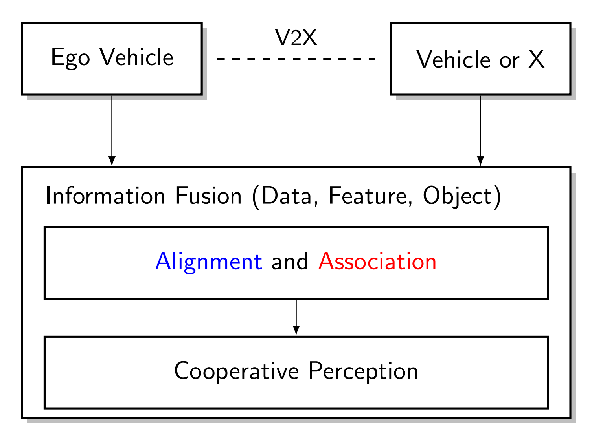

Research
🎖 Our mission is to develop and analyze novel algorithmic solutions to current and future challenges in cooperative driving. We are curious and challenge ourselves by actively seeking feedback through collaboration and open sharing of ideas. We are committed to reproducible research. We aim to generate useful knowledge and disseminate it through top-tier journal and conference publications, with high regard to both style and content.
Cooperative Driving of Automated Vehicles with V2X Technology
 |
1. Cooperative Perception
|  |
|
2. Vehicular Communications
|